Sherry Turkle Ted Talk
“Connected but alone?”, 2012
Le dating app si presentano con la promessa di trovarci l’anima gemella e di svoltarela nostra vita. Queste
funzionano però attraverso la riproduzione automatica di perditae guadagno, auto-validazione e umiliazione,
speranza e frustrazione.
L’obiettivo infatti è in realtà quello di far sì che gli utenti vi passino più tempo possibile sopra e che
tornino a riutilizzarle. Conoscere persone online è infatti diventatouna vera e propria forma di intrattenimento
in cui si può sempre cercareun “di più” se si è insoddisfatti.
I social network hanno avuto un impatto concreto sul modo di pensare, sentiree relazionarsi delle persone, modificandole pratiche di interazione sociale e il valore attribuito alle relazioni. Si è sviluppatoun nuovo linguaggio più filtrato con modalità comunicative più superficiali. Nella dimensione digitale, infatti, vengono meno elementi fondamentali dell’esperienza umana come il contatto fisico e la corporeità, essenziali per costruire legami autentici. Nonostante ciò, la necessità di esperienze fisiche e reali restaun bisogno costante: ciò che la tecnologiaha potenziato è solo la frequenzae l’intensità dei momenti di (con)tatto.
Il 33.3% degli intervistati reputa necessario frequentare una persona dal vivo per porrele basi di un rapporto sano.
Il restante 66.7% non considera l’online un ostacolo alla formazione di una relazione genuina.
*Indagine condotta su un campione di 209 persone nel febbraio 2025
Le dating app e i tarocchi presentano dei forti parallelismi nelle modalità. In entrambi i casi infatti il coinvolgimento emotivo porta la persona a riflettere e a prendere delle scelte. Le app di dating vengono spesso presentate come un gioco di destino e casualità, ma in realtà le persone che ci vengono proposte sono selezionate in base agli algoritmi, che fanno calcoli e previsioni.
È praticamente impossibile sapere con certezza come l’algoritmo di ogni app lavori, spesso perchè sono informazioni che le aziende non diffondono. Diversi studi hanno però cercato di portare alla luce questo meccanismo, emerso come un’insieme di raccolta dati e del cosiddetto Elo Score.
L'amore digitale riproduce in modo gamificato l'alternanza affettiva di convalida e umiliazione, offrendo al
soggetto la possibilità di gestire
questi sentimenti nello spazio virtuale e deresponsalizzato dell'app.
Abbinare o connettersi con
qualcuno su un'app ha infatti uno stato di realtà diverso rispetto a farlo di persona. C'è una gerarchia
ontologica e morale in gioco: finché le interazioni rimangono all'interno dell'app di incontri,i codici morali
che le regolano sono molto più flessibili e l'altro non è realmente riconosciuto nella sua personalità.

Alla domanda “Perchè hai sentito il bisogno di scaricare una dating app?”, il 47% ha risposto “un po’ per gioco."

I dark pattern nelle dating app sono strategie progettuali intenzionali che mirano a manipolare il
comportamento degli utenti per fargli spendere più tempo, denaro o dati personali sulla piattaforma.
Sebbene la maggior parte delle dating app risultino gratuite da scaricare e per lanciare il proprio
profilo, molte di queste comunque offrono dei piani a pagamento con diverse caratteristiche e fasce di prezzo.
Ad esempio, per ottenere"swipe" illimitati bisogna passare alla versione premium.
il 39,1% degli intervistati ritiene di aver trovato differente l’esperienza sulle dating app con l’utilizzo di un account premium, lasciando l’abbonamento attivo.*
Il restante 60,9% ha sostenuto di non aver trovato differenze sostanziali e di aver infatti annullato l’abbonamento.*
Ecco a voi una raccolta di aneddoti, storie e una serie di sfortunati date per farvi sentire meno soli nelle vostre disavventure. Buona lettura! *

Scopri chi si nasconde dietro il tuo prossimo swipe e impara a riconoscere - dal Ghoster al Poliamante - i vari “personaggi” delle dating app.